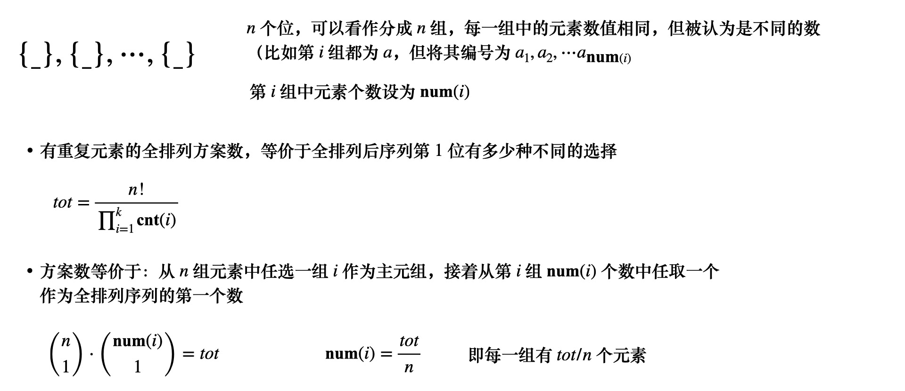

数学基础问题 Again Prime? No time.
The Super Powers p p p
p e = p s 1 s 2 ⋯ s m e = s 1 s 2 ⋯ s m \begin{aligned} p^e &= p^{s_1s_2\cdots s_m} \\ e &= s_1s_2\cdots s_m \end{aligned} p e e = p s 1 s 2 ⋯ s m = s 1 s 2 ⋯ s m
不难想到，如果一个数是超级幂，满足
{ e 是合数，且 e > 4 枚举底数 x ∈ [ 2 → 2 64 − 1 ] , e ⩽ ⌈ 64 ⋅ log ( 2 ) log ( x ) ⌉ − 1 \begin{cases} e \ \text{是合数，且} \ e > 4 \\ \text{枚举底数} \ x \in [2 \to 2^{64}-1], e \leqslant \left\lceil \frac{64 \cdot \log(2)}{\log(x)} \right\rceil - 1 \end{cases} { e 是合数，且 e > 4 枚举底数 x ∈ [ 2 → 2 6 4 − 1 ] , e ⩽ ⌈ l o g ( x ) 6 4 ⋅ l o g ( 2 ) ⌉ − 1
暴力法即可解决
for ∀ x ∈ [ 2 ⋯ ] \textbf{for} \ \forall x \in [2 \cdots ] for ∀ x ∈ [ 2 ⋯ ] x , e ⩽ ⌈ 64 ⋅ log ( 2 ) log ( x ) ⌉ − 1 x, \quad e \leqslant \left\lceil \frac{64 \cdot \log(2)}{\log(x)} \right\rceil - 1 x , e ⩽ ⌈ l o g ( x ) 6 4 ⋅ l o g ( 2 ) ⌉ − 1 r e s ← 1 for ∀ i ∈ [ 1 → e ] res \leftarrow 1 \quad \textbf{for} \ \forall i \in [1 \to e] r e s ← 1 for ∀ i ∈ [ 1 → e ] i i i r e s ← r e s × ∏ x ⇔ r e s = r e s ⋅ x i \quad res \leftarrow res \times \prod x \ \Leftrightarrow \ res = res \cdot x^i r e s ← r e s × ∏ x ⇔ r e s = r e s ⋅ x i if i 为合数 , x i 是 super power , r e s → ans { ⋯ } \textbf{if} \ i \ \text{为合数}, \quad x^{i} \ \text{是 super power}, \ res \to \text{ans}\{\cdots \} if i 为合数 , x i 是 super power , r e s → ans { ⋯ } 说明，在算法中我们只需要从小到大枚举底数x x x i i i x x x x x x x x x Teams
S ( n ) = ∑ k = 1 n ( n k ) ( k 1 ) = ∑ k = 1 n k ⋅ ( n k ) S ( n ) = 1 ( n 1 ) + 2 ( n 2 ) + ⋯ ( n − 1 ) ( n n − 1 ) + n ( n n ) S ( n ) = n ( n n ) + ( n − 1 ) ( n n − 1 ) + ( n − 2 ) ( n n − 2 ) ⋯ + 1 ( n 1 ) \begin{aligned} S(n) &= \sum_{k=1}^{n} \binom{n}{k} \binom{k}{1} = \sum_{k=1}^{n} k \cdot \binom{n}{k} \\ S(n) &= 1\binom{n}{1} + 2\binom{n}{2} + \cdots (n-1) \binom{n}{n-1} + n \binom{n}{n} \\ S(n) = n\binom{n}{n} + &(n-1)\binom{n}{n-1} + (n-2)\binom{n}{n-2} \cdots + 1\binom{n}{1} \end{aligned} S ( n ) S ( n ) S ( n ) = n ( n n ) + = k = 1 ∑ n ( k n ) ( 1 k ) = k = 1 ∑ n k ⋅ ( k n ) = 1 ( 1 n ) + 2 ( 2 n ) + ⋯ ( n − 1 ) ( n − 1 n ) + n ( n n ) ( n − 1 ) ( n − 1 n ) + ( n − 2 ) ( n − 2 n ) ⋯ + 1 ( 1 n )
从而可以推出
2 S ( n ) = n ⋅ 2 n ⇒ S ( n ) = n ⋅ 2 n − 1 2S(n) = n \cdot 2^{n} \Rightarrow S(n) = n \cdot 2^{n-1} 2 S ( n ) = n ⋅ 2 n ⇒ S ( n ) = n ⋅ 2 n − 1
唯一分解定理 LCM Cardinality
{ a ⋅ b = n ⋅ gcd ( a , b ) gcd ( a , b ) ∣ n \begin{cases} &a \cdot b = n \cdot \text{gcd}(a, b) \\ &\text{gcd}(a, b) \mid n \end{cases} { a ⋅ b = n ⋅ gcd ( a , b ) gcd ( a , b ) ∣ n
很容易想到应该对n n n
对n n n n = p 1 s 1 p 2 s 2 ⋯ p m s m a = p 1 a 1 p 2 a 2 ⋯ p m s m b = p 1 b 1 p 2 b 2 ⋯ p m s m \begin{aligned} n &= p_1^{s_1}p_2^{s_2} \cdots p_m^{s_m} \\ a &= p_1^{a_1}p_2^{a_2} \cdots p_m^{s_m} \\ b &= p_1^{b_1}p_2^{b_2} \cdots p_m^{s_m} \end{aligned} n a b = p 1 s 1 p 2 s 2 ⋯ p m s m = p 1 a 1 p 2 a 2 ⋯ p m s m = p 1 b 1 p 2 b 2 ⋯ p m s m
原问题等价于{ max ( a i , b i ) = s i s i 中有多少种无序 ( a i , b i ) 组合 \begin{cases} \max(a_i, b_i) = s_i \\ s_i \text{中有多少种无序} (a_i, b_i) 组合 \end{cases} { max ( a i , b i ) = s i s i 中有多少种无序 ( a i , b i ) 组 合
先从( a i , b i ) (a_i, b_i) ( a i , b i ) s i s_i s i ( 2 1 ) 2 \choose 1 ( 1 2 ) [ 0 , s i − 1 ] [0, s_i-1] [ 0 , s i − 1 ] s i s_i s i ( 2 1 ) ⋅ s i = 2 s i \binom{2}{1} \cdot s_i = 2s_i ( 1 2 ) ⋅ s i = 2 s i a i = b i = s i a_i = b_i = s_i a i = b i = s i ( a i , b i ) (a_i, b_i) ( a i , b i ) ( s i , s i ) (s_i, s_i) ( s i , s i ) 1 1 1 ∀ p i \forall \ p_i ∀ p i 2 s i + 1 2s_i + 1 2 s i + 1 ∏ i ( 2 s i + 1 ) 2 \frac{\prod_i (2s_i + 1)}{2} 2 ∏ i ( 2 s i + 1 )
但注意∏ ( 2 s i + 1 ) \prod(2s_i + 1) ∏ ( 2 s i + 1 ) ∏ ( 2 s i + 1 ) \prod(2s_i+1) ∏ ( 2 s i + 1 ) ( n , n ) (n, n) ( n , n ) + 1 +1 + 1 2 2 2 a n s = ⌈ ∏ i ( 2 s i + 1 ) + 1 2 ⌉ = ⌊ ∏ i ( 2 s i + 1 ) 2 ⌋ + 1 ans = \left\lceil \frac{\prod_i (2s_i + 1) + 1}{2} \right\rceil = \left\lfloor \frac{\prod_i (2s_i+1)}{2} \right\rfloor + 1 a n s = ⌈ 2 ∏ i ( 2 s i + 1 ) + 1 ⌉ = ⌊ 2 ∏ i ( 2 s i + 1 ) ⌋ + 1
UVA10791
同余与剩余类 任意整数a m o d p a \bmod p a m o d p p p p
{ 0 } , { 1 } , ⋯ , { p − 1 } \{0\}, \{1\}, \cdots , \{p-1\} { 0 } , { 1 } , ⋯ , { p − 1 }
于是很多同余问题就转换成剩余类计数问题，比如我们可以用s { 0 } s_{\{0\}} s { 0 } { 0 } \{0\} { 0 }
s { 0 } , s { 1 } , ⋯ , s { p − 1 } s_{\{0\}}, s_{\{1\}}, \cdots , s_{\{p-1\}} s { 0 } , s { 1 } , ⋯ , s { p − 1 }
如果一个B B B p p p ∑ i \sum_{i} ∑ i p p p for ∀ i ∈ [ 0 , B ) \textbf{for} \ \forall i \in [0, B) for ∀ i ∈ [ 0 , B )
s { 0 } , s { 1 } , ⋯ , s { p − 1 } ∑ i ≡ 1 s { 1 } + 2 s { 2 } + ⋯ + ( p − 1 ) s { p − 1 } ( m o d p ) \begin{gathered} s_{\{0\}}, s_{\{1\}}, \cdots , s_{\{p-1\}} \\ \sum_{i} \equiv 1s_{\{1\}} + 2s_{\{2\}} + \cdots + (p-1)s_{\{p-1\}} (\bmod p) \end{gathered} s { 0 } , s { 1 } , ⋯ , s { p − 1 } i ∑ ≡ 1 s { 1 } + 2 s { 2 } + ⋯ + ( p − 1 ) s { p − 1 } ( m o d p )
UVA11489
1 2 3 4 5 6 7 8 9 10 11 12 13 14 15 16 17 18 19 20 21 22 23 24 25 26 27 28 29 30 31 32 33 34 35 36 int s[4]; string str; void solve for (auto x : str) s[x % 3]++; int mo = 0; for (int i = 0; i <= 2; i++) mo += i * s[i]; mo %= 3; if (mo == 0) { string res; s[0] % 2 ? res = "S" : res = "T" ; printf ("%s\n" , res.c_str()); } else { if (s[mo] == 0) printf ("T\n" ); else { string res; s[0] % 2 ? res = "T" : res = "S" ; printf ("%s\n" , res.c_str()); } } } int main freopen("input.txt" , "r" , stdin); int T; cin >> T; int kase = 0; while (T--) { printf ("Case %d: " , ++kase); memset(s, 0, sizeof s); cin >> str; solve(); } }
组合计数基础 重复元素的全排列方案数 定理 n n n m m m i i i p i p_i p i
n ! ∏ k = 1 m p k ! \frac{n!}{\prod_{k=1}^{m} p_k !} ∏ k = 1 m p k ! n !
Add Again
1 2 3 4 5 6 7 8 9 10 11 12 13 14 15 16 17 18 19 20 21 22 23 24 25 26 27 28 29 30 31 32 33 34 35 36 37 38 39 40 41 42 43 44 45 const int maxn = 15; const ll one[13] = { 0, 1, 11, 111, 1111, 11111, 111111, 1111111, 11111111, 111111111, 1111111111, 11111111111, 111111111111 }; int n; ll fac[maxn]; int cnt[maxn]; void prework fac[0] = fac[1] = 1; for (int i = 2; i <= 12; i++) { fac[i] = fac[i-1] * (ll)i; } } int main freopen("input.txt" , "r" , stdin); prework(); while (scanf("%d" , &n) == 1 && n) { memset(cnt, 0, sizeof cnt); int sum = 0; for (int i = 0; i < n; i++) { int x; scanf("%d" , &x); sum += x, cnt[x]++; } ll res = (ll)sum * fac[n-1]; for (int i = 0; i <= 9; i++) res /= fac[cnt[i]]; printf ("%lld\n" , res * one[n]); } }
回文串计数举例 UVA12050
1 2 3 4 5 6 7 8 9 10 11 12 13 14 15 16 17 18 19 20 21 22 23 24 25 26 27 28 29 30 31 32 33 34 35 36 37 38 39 40 41 const int N = 20; ll cnt[N]; int C; void prework cnt[1] = 9, cnt[2] = 9; for (int i = 3; i < N; i++) { if (i & 1) cnt[i] = cnt[i-2] * 10; else cnt[i] = cnt[i-1]; } } void solve // i len, C th int i = 1; for (; i < N; i++) { if (cnt[i] < C) C -= cnt[i]; else break ; } C--; string str(i, '0' ); int k = i/2; while (C) { str[k++] = '0' + C % 10; C /= 10; } str[i-1]++; for (int j = 0; j < i/2; j++) { str[j] = str[i-1-j]; } printf ("%s\n" , str.c_str()); } int main freopen("input.txt" , "r" , stdin); prework(); // for (int i = 1; i < N; i++) debug(cnt[i]); while (scanf("%d" , &C) == 1 && C) { solve(); } }
 微信
微信 支付宝
支付宝